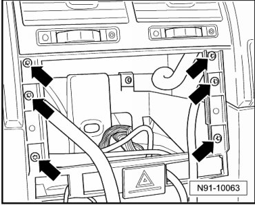
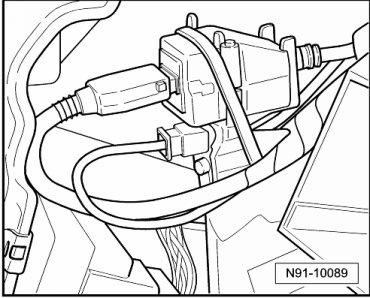
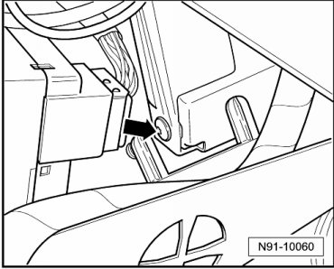
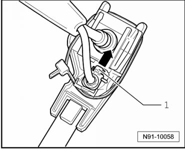
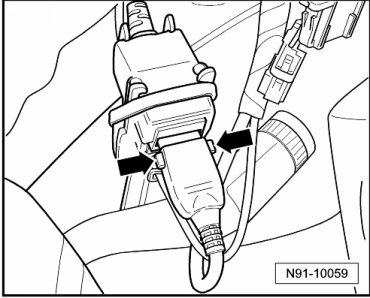

Telephone Cradle with Electrical Wiring Harness
Telephone Cradle with Electrical Wiring Harness
- Remove telephone cradle. Refer to --> [ Telephone Mount ] Telephone Mount.
removing
Vehicles with closed storage compartment in top center of instrument panel
- Open storage compartment in instrument panel.
- Remove both bolts from storage compartment insert.
- Remove insert from storage compartment.
- Remove radio or radio navigation system:
• Delta radio, removing. Refer to --> [ Delta Radio ]
• Radio Navigation System 2. Refer to --> [ Radio Navigation System 2 with 6.5 inch Color Display ] Radio Navigation System 2 with 6.5 inch Color Display
- Remove the six bolts - arrows - from frame.

- Remove frame together with center air vents.
- Disconnect connectors on switches.
Vehicles with open storage compartment in top center of instrument panel
- On vehicles with open storage compartment in top center of instrument panel, remove storage compartment.
Continuation for all:
View of connectors for telephone cradle in left of instrument panel.

- Remove bolt on connector bracket - arrow - and remove bracket.

• The bracket must be completely removed with the connectors. Otherwise, the locking mechanism on the antenna wire connector cannot be operated because it is located on the back side of the bracket.
- Remove bracket and release antenna wire connector by moving locking mechanism - 1 - in direction of arrow and then removing connector.

- Release connector by pressing both buttons - arrows - and remove connector.

- Guide telephone cradle with wiring harness out of instrument panel.
Installing
- When tightening telephone cradle on instrument panel, hold counterhold under instrument panel firmly with hand. To do this, the insert in the instrument panel center storage compartment must be removed, or, in the case of an open storage compartment, the compartment must be removed.
Before installing the storage compartment, ensure the wiring is routed correctly in the instrument panel to ensure clearance for the cover mechanics.
Remaining installation in reverse order of removal.